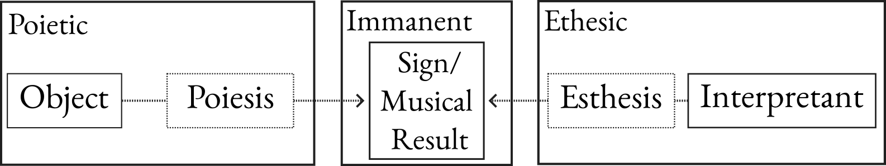
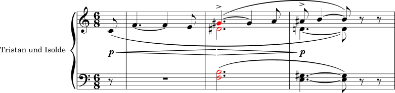
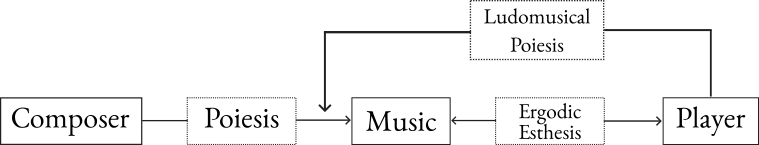

On Ludomusical Poiesis.
Or, “So What Does a Ludomusicologist Do Anyway?”
“But nothing you've said so far reconciles the fact that ‘performance’ indicates a level of intentionality that ‘poiesis’ simply doesn’t.”
My colleague and I have been arguing for 6 straight hours right into the deep hours of the night. Our discussion has spanned millenia of thought from Plato’s metaphysics to Peirce and Nattiez’s semiotic theories, and even Butler’s concepts of gender performance.
We’ve spent the evening keeping alight a crucible; one in which irrelevancies are burned away until we are left with a pure product: the truth. And—as per the traditional meaning of symposium—we’re moderately drunk at this point.
It’s perhaps no wonder that we have yet to decide whether the third word in this article’s title should be ‘performance’ or ‘poiesis’.
Table of Contents:
Last month I spoke in some detail about those oft-misuderstood models of understanding. I outlined there why I believe it is important to acknowledge the nature of these products of the social sciences; the way in which they represent the observations of the natural sciences not in the most strictly true manner, but the manner which makes those observations more easily intelligible to their audience.
It seems pertinent, therefore, to outline the model I am personally responsible for constructing. And in doing so formally coin the term “ludomusical poiesis”, which has been one of the core pieces of my research in the field of video game music analysis for the past four years.
Introdution
One of the key issues game music researchers face is the loose association betweent the musical material of a game and the visual/narrative components it accompanies. As a result of the medium’s inherent interactivity game music’s meaning can often not be understood merely through its direct connection to the information conveyed on the screen when it plays. Instead the musical material must be interpreted by both the player and analyst in relation to the game world and game states it arises from.
One framework through which this distinction between the interpretive meanings of linearly sequenced audio-visual media and non-linear, interactive media is that provided by the field of semiotics. In this proposal I briefly outline the relevant key-concepts of semiotics and summarise how they have been historically applied to musical material. Then, through a case study of Super Mario Bros. for the Nintendo Entertainment System, I draw upon the limited field of ludomusicology to interpret the initial game state meanings of musical signs in the game before dicussing the player’s role as a musical performer who creates and configures those signs to the same extent as the composer and sound designer. This introduces the action of ludomusical poiesis which is the core concept of my research.
The field of ludomusicology is still relatively new, with academic discussions in the discipline only beginning in earnest in the mid-2000s. 1 And due to the medium’s interent interactivity one of the key concepts being investigated in the discipline is the participation of the player as a musical performer. This difference between the active musical involvement of the audience in interactive media as opposed to their passive spectatorship in linearly sequenced media requires researchers to adopt a fundamentally different analytical approach when interpreting this new compositional format. 2
So far this has been approached through several different pre-existing analytical methods. One approach has been to study how game music composers approach non-linear harmonic structures. This is seen through the procedural generation of consonant pitches in accordance with Johann Fux’s counterpoint treatise as heard in Spore. 3
Psychological studies have also been referred to in order to investigate how music impacts upon the player’s gameplay performance to either enhance or impede their progression through a game. For reference, see Warren Brodsky’s analysis of faster-tempo music in driving games to reinforce the player’s impulses for faster, less accurate driving. 4
Elizabeth Medina-Gray has employed form analysis by comparing modular musical systems to the aleatoric compositional approaches of mid-twentieth century composers. 5
The field of hermeneutics has also been referred to by Miciel Kamp to investigate how players “interpret video game music for a number of practical or functional purposes” which are informed by their phenomenological experience with the game. 6
Each of these approaches provide interesting insight into the interactions between the player and the musical material of the game. However, they are all lacking in an ability to demonstrate what specifically that music is conveying to the player. I believe therefore, that the area of research which is best equipped to construct an analytical method into the creation and interpretation of game music’s extra-musical meaning is semiotics.
Peircean Semiotics
Semiotics is a discipline in which the uses and meanings of signs that are shared back and forth in communication are analysed. The most common branch of this field is primarily concerned with linguistics, and was developed by Ferdinand de Saussure. However, the branch of semiotics which is more relevant to my research is the universal approach developed by Charles Sanders Peirce.
Peirce summarises this universal approach as the analysis of signs as “anything, of whatsoever mode of being, which mediates between an object and an interpretant.” 7 The three constituent parts of this analysis are the object, the sign, and the interpretant.
We can understand objects as anything which exists, to the extent of even abstract concepts such as emotions and laws. These objects are communicated via the means of a sign, which as outlined above can take any communicative form and are fed through to the interpretant. We understand the interpretant in this model as the impact of the sign upon whatever observes it. It will be important to my analysis later that interpretants are understood to comprise not only sentient minds but also any system (most relevantly computer systems) which can observe and be impacted by a sign.
Fig. 1: Basic Outline of Peircean Semiotics
Nattiez’s Musical Semiotics
The most well cited application of Peirce’s universal semiotics to music studies is presented by Jean-Jacques Natties, who outlines a tripartite method of musical semiotics comprising three categories which “define a total musical fact.” 8 This musical fact can be seen as the entire process of expressing an object to an interpretant through a specifically musical sign. Nattiez expresses these categories as the poietic level, the immanent level, and the esthesic level.
These levels can be approached in terms of their relationship to Peirce’s conceptions of the object, sign, and interpretant. The poietic level is concerned with the construction of musical material which represents an object. This process of poiesis is undertaken by the musical composer in conjunction with the performer, often through an intermediate medium such as a musical score. This poietic process results in the construction of the surface musical details as it sounds, and these details comprise the immanent level of Nattiez’s tripartite method. The third level concerns the interpretation of that musical result by the listener or audience through the sensory process of esthesis.
One notable difference between Nattiez’s method and the Peircean construct outlined above is it this final stage between the sign and the interpretant. Whereas Peirce defines the final stage of the semiotic process in terms of how the sign acts upon the interpretant, Nattiez takes the opposite approach; instead focusing on the manner in which the interpretant chooses to apply meaning to their experience of the sign.
Fig. 2: Nattiez’s Tripartite model of musical semiosis. 9
One of the most common applications of these semiotic concepts in the analysis of musical meaning is the use of leitmotif in opera and film score. In a semiotic analysis a leitmotif can be considered as a musical sign which communicates a narrative object to the audience of interpretants. An analysis of the immanent level of Wagner’s opening to Tristan Und Isolde may interpret the eponymous Tristan Chord as merely a modified minor seventh chord, a French sixth chord, or a secondary dominant. 10
Nattiez clarifies such vertical critiques as functional functional analyses which should be distinguished from non-functional analyses that focus mode on the horizontal, linear progressions of the music by dealing with “the chord with respect to the melodic continuity that forms its context.” 11 These non-functional analyses provide a model with which to understand the full esthesic context within which the audience hears the sonority and thus clarify the object wich the Tristan Chord as a musical sign communicates.
When the narrative contexts in which the chord is heard are considered this object becomes crystal-clear, and the musical sign can—in this full, linear, and non-functional context—be understood to communicate the narrative object of the obstacles in the way of Tristan and Isolde’s desire for one another. 12 In Nattiez’s view of this analysis the defining features which inform this ethesic interpretation are not the immanent elements of the musical material but instead the linear narrative contexts in which the audience hears it.
Fig. 3: The introduction to Tristan und Isolde, featuring the ‘Tristan Chord’.
Outlining Ludomusical Semiotics
The fundamental problem of trying to directly apply Nattiez’s Tripartite method of musical semiosis to video games is the non-linearity of the medium. As Karen Collins discusses, music in games is often even more malleable than narrative and visual components as it is required to “respond to the player’s or nonplaying character’s actions, and/or to in-game parameters (health timings, and so on), as well as location based parameters. 13
In the broader field of game studies, the specific set of stories which arises from the player’s actions and interpretations of events within a game has been referred to as an ‘alterbiography’. 14 In understanding how music interacts with, and narrativizes this alterbiography it is therefore important to formally state the different manners through which the player’s actions can create and configure musical signs within the sound system of a game.
Interactive and Adaptive Musical Signs
The musical material offered in Super Mario Bros. offers some insights into the two primary manners through which music can react to a player’s actions. As the player progresses through a level of the game they will actively make the player avatar, Mario, undertake a number of actions which the music directly responds to. In her analysis of Matthew Hindson’s Nintendo Music (2005)—which directly quotes musical material from the game—Jessica Crowe provides a motivic analysis of some of these signs within the context of a linearly sequenced musical work.
She notes, for instance, the ‘mickey mousing’ of the Jump motif; 15 borrowing from the language of film score analysis to describe an attemp by the composer to directly emulate the action on the screen musically, as was a common trope in early cartoons. She analyses the way this glissando of a fifth, which plays whenever Mario jumps, directly outlines the rapid rise of the character with the simultaneous ascent of the musical material.
But what is missing when attempting to apply this analysis to the game itself as opposde to Hindson’s derivative concert work is an understanding of these musical signs as they emerge from the sound system as well as the gameplay objects which they are accompanying.
Within a standard playthrough of the game’s first level the player will encounter three musical signs which react immediately and directly to the players actions. These are:
- The glissando jump, as outlined above,
- The sharp leap of a fourth which plays whenever the player avatar collects a coin, and
- A series of rapid arpeggios, which correspond to Mario powering up upon collecting a mushroom.
Fig. 4: Interactive musical signs from Super Mario Bros.
As Richard Stevens expresses, because each of these musical cues corresponds directly to player input, we can define them as ‘interactive signs’ which signal a specific and singular ludic event. 16 And we can see from this that as a result of this ludomusical interaction the object of the mushroom sign becomes less evident. A motivic analysis would state that the arpeggiated motif signals the action of eating a mushroom, but this does not hold wholly true when considered in a gameplay context. Instead, our analysis must consider the game-state change in which Mario powers-up.
We can see, therefore, that often the musical signs of game music are not attempting to signify narrative objects within a player’s alterbiography but instead to represent the object of changing gameplay elements.
Stevens delineates these interactive signs from other musical material which responds to player actions in a less direct and immediate manner. He refers to this latter category as ‘adaptive music’. 17 The most evident of these is the sign which plays when the player takes too long to complete a level; allowing the timer in the upper right-hand corner of the screen to reach 100. If the player allows the timer to drop all the way to 0 then the game will change to a ‘game over’ fail state and they will be forced to restart their progress through the level.
Fig. 5: An adaptive musical sign from Super Mario Bros.
As this is an undesirable scenario the musical sign acts as a warning, and is signalling the object of an upcoming potential state which the player should attempt to avoid by finishing the level as quickly as possible. This shows the game musci can not only signify previous gameplay actions and current gameplay states but also upcoming and potential events and states.
Ludomusical Poiesis
There has been little research so far that specifically applies the semiotic constructs outlined above to video game music. The most prominent researcher in this area is Iain Hart who suggests that in applying the discipline we should “conduct separate semiotic analyses of video game music’s initial composition and interactive configuration.” 18
This accounts for the incompleteness of game music’s received meanings without the context of the player’s interaction whilst still accounting for the creator’s intended compositional meanings. Hart’s anlysis of game music’s interactive configurations is of note as he applies Espen Aarseth’s concept of ergodic texts for which “work has to be done to them in order to interpret them” 19 to the esthesic portion of the semiosis process. This helps to model the way in which the player’s actions impact upon their own interpretation of the work.
Hart introduces—though does not expand upon in detail—the player’s own creation and configuration of musical signs within the game audio system. And this is the point at which we diverge on some key points. Hart’s conception of ludomusical semiosis is one of active interpretation and engagement on the part of the player who takes the role of a musical performer whose instrument is the game audio system. I feel that this implies a far too great degree of intentionality with regard to the way these systems operate in practice.
Unlike a musical performer, a video game player rarely considers themselves as actively creating and configuring musical material. We should therefore be careful in utilising such active language when describing a player’s interactions with game audio systems. It is for this reason that I am in favour of the more neutral term ‘poiesis’ when describing these ludomusical interactions.
Fig. 6: Semiosis of Interactive Configuration.
I therefore term my model of this subconcious system of musical creation and configuration between the player, game system, and composer as ‘ludomusical poiesis’. And there are still a number of unanswered questions and areas of interest regarding its effect on the player’s interpretation and/or creation of the object which musical signs signify.
For example, if we apply Chris Tonelli’s analysis of game music to signify the player or their avatar 20 is there the potential for the players alterbiography to create musical signs that signify the object of their identity?
To what extent do musical signs compel players towards certain ludic actions that create further complementary musical signs?
Is the use of nostalgic rhetoric in music, as express by Jessica Kizzire, 21 in some part a function of the player’s own ludomusical experience?
Due to ludomusicology’s youth as an analytical discipline there is a veritable wealth of places to take this field of research, and boundless cross-disciplinary methods to consider when trying to construct new ways of modelling meaning and interpretation in these interactive musical works. And I, for one, am ecstastic at the opportunities to keep lighting the crucible.
Aragorn Keuken
February 29th, 2024

- Melanie Fritsch and Tim Summers, ‘Introduction’, in The Cambridge Companion to Video Game Music (Cambridge: Cambridge University Press, 2021), 2. Return
- Roger Moseley and Aya Saiki, ‘Nintendo’s Art of Musical Play’, in Music in Video Games: Studying Play (New York: Routledge, 2014), 52. Return
- Kent Jolly and Aaron McLeran, ‘Procedural Music in Spore’ (Game Developers Conference, San Francisco, 20 February 2008). Return
- Warren Brodsky, ‘The Effects of Music Tempo on Simulated Driving Performance and Vehicular Control’, Transportation Research Part f: Traffic Phychology and Behaviour 4, no. 4 (2001): 219–41. Return
- Elizabeth Medina-Gray, ‘Modular Structure and Function in Early 21st-Century Video Game Music’ (PhD Thesis, Yale University, 2014). Return
- Chris Tonelli, ‘Game Music and Identity’, in The Cambridge Companion to Video Game Music (Cambridge: Cambridge University Press, 2021), 163. Return
- Charles Sanders Peirec, The Essential Peirce: Selected Philosophical Writings (1893–1913), ed. Peirce Edition Project (Bloomington, Indiana: Indiana University Press, 1998), 410. Return
- Jean Jacques Natties, Music and Discourse: Toward a Semiology of Music, trans. Carolyne Abbate (Princeton, New Jersey: Princeton University Press, 1990), ix. Return
- Ibid, 73. Return
- Daniel Harrison, ‘Supplement to the Theory of Augmented Sixth Chords’, Music Theory Spectrum 17, no. 2 (1995): 184. Return
- Nattiez, Music and Discourse: Toward a Semiology of Music, 226. Return
- To this end some critics, myself included, have taken to jokingly referring to such modified minor seventh chords as ‘Wagnerian cockblocks’. Return
- Karen Collins, Game Sound: An Introduction to the History, Theory, and Practice of Video Game Music and Sound Design (Cambridge, MA: The MIT Press, 2008), 144. Return
- Gordon Calleja, In-Game: From Immersion to Incorporation (Cambridge, MA: The MIT Press, 2011), 124. Return
- Jessica Crowe, ‘Playing Games with Postmodernism: Matthew Hindsons’s Nintendo Music (2005)’, Journal of Music Research 42 (2017): 77. Return
- Richard Stevens, ‘The Inherent Conflicts of Musical Interactivity in Video Games’, in The Cambridge Companion to Video Game Music (Cambridge: Cambridge University Press, 2021), 76. Return
- Ibid. Return
- Iain Hart, ‘Meaningful Play: Performativity, Interactivity and Semiotics in Video Game Music’, Musicology Australia 36, no. 2 (2014): 285. Return
- Iain Hart, ‘Semiotics in Game Music’, in The Cambridge Companion to Video Game Music (Cambridge: Cambridge University Press, 2021), 228. Return
- Tonelli, Chris. ‘Game Music and Identity’. In The Cambridge Companion to Video Game Music (Cambridge: Cambridge University Press, 2021), 327. Return
- Jessica Kizzire, ‘“The Place I’ll Return to Someday”: Musical Nostalgia in Final Fantasy IX’, in Music in Video Games: Studying Play (New York: Routledge, 2014), 1–29. Return